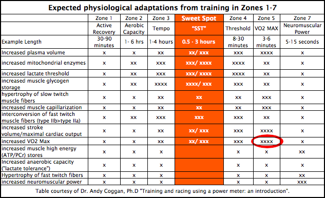

la VO2 max
qu'est-ce que la VO2 max ?
La VO2max correspond au volume maximal d'oxygène qu'un cycliste peut consommer, elle s'exprime en litres par minute, notée (L/min)
comment calculer sa VO2 max ?
La seule possibilité pour calculer sa V02max est de faire un test en laboratoire, ce test consiste à partir d'une faible intensité et augmenter progressivement l'intensité jusqu'à l'épuisement, le résultat du test correspond au volume maximal d'oxygène consommé pendant le test à un moment donné.
comment travailler sa VO2 max ?
D'après les travaux d'Andy Coggan la zone d'intensité la plus propice à l'amélioration de la V02max est la zone 5, ce qui
représente un effort à PMA.
quelque exercice pour travailler sa VO2max:
- Le fractionné 30s/30 s, il est constitué de plusieurs séries elles-même constituées de répétitions de 1min (30 secondes
entre 120 et 135% de PMA et 30 secondes de récupération), cet exercice doit être effectué en cote, il est très simple à
exécuter et peu petre effectué sans capteur de puissance et Cardiofréquencemètre mais ne bénificira pas de la même efficacité.
- Le fractionné 3min/3min, il est constitué de plusieurs répétitions de 6min (3min entre 100 et 105% de PMA et 3min de
récupération) cet exercice doit être effectué avec un capteur de puissance ou un Cardiofréquencemètre et sur une pente régulière.
